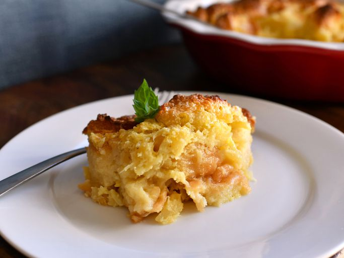

Scalloped Pineapple Souffle
Description
Scalloped Pineapple Soufflé is a warm, buttery, and sweet Southern-style side dish that perfectly blends the richness of a bread pudding with the brightness of pineapple. With its golden, caramelized crust and soft, custard-like center, this comforting casserole combines crushed pineapple, eggs, sugar, and buttery bread cubes for a surprisingly irresistible treat. Often served alongside ham or roast dishes, it brings a delightful sweet-savory contrast to the table—making it a holiday favorite and a nostalgic crowd-pleaser.
Ingredients
- 3 eggs, whites and yolks separated
- 1 1/2 cups white sugar
- 1/2 cup butter
- 1 (15 ounce) can crushed pineapple, drained
- 3 cups cubed bread
Directions
- Gather all ingredients.
- Preheat an oven to 350 degrees F (175 degrees C).
- Beat egg whites until foamy in a large glass or metal mixing bowl until stiff peaks form. Lift your beater or whisk straight up: the egg whites should form a sharp peak that holds its shape.
- Beat the egg yolks, sugar, butter, and milk together in a large bowl. Stir in the pineapple and bread. Lightly fold egg whites into the pineapple mixture, then spread the mixture into a large baking dish.
- Bake in the preheated oven until golden brown, 35 to 45 minutes.